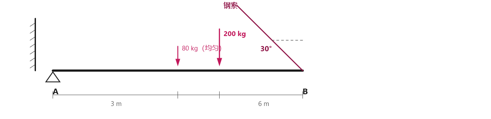
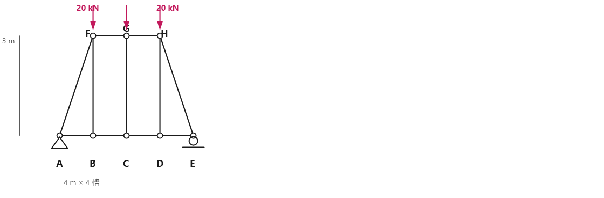
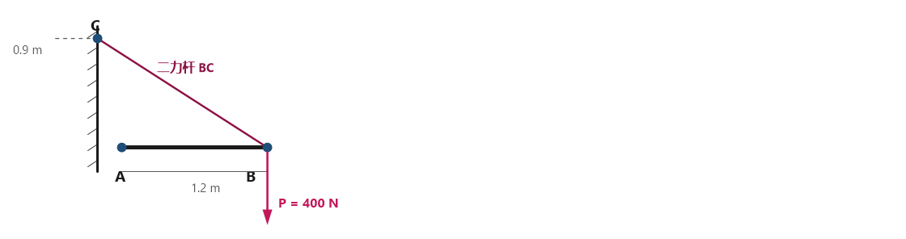
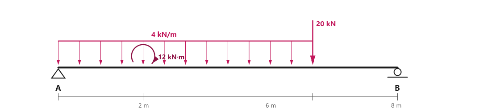

1试卷（题目）
闭卷，120 分钟，满分 100 分。g = 9.81 m/s²。受力图、剪力图与弯矩图必须画出，未画图按比例扣分；结果保留 3 位有效数字。
一、（8 分）量纲与单位
圆轴扭转角 θ = TL/(JG)。(a) 用长度 L 与力 F 表示 J 的量纲；(b) 写出 J 的 SI 单位与 US 单位；(c) 把 1 kip·ft 换算成 N·m；(d) 某截面 J = 5.2×10⁶ mm⁴，用 m⁴ 表示是多少？
二、（12 分）力矩与等效力系
力 F = 250 N 作用于点 A(0.4, 0.3) m，方向沿 3-4-5 方向（4 向右、3 向下）。求：(a) F 对原点 O 的矩；(b) F 对 B(0.7, 0) m 的矩；(c) 把 F 等效到 O 点的力–偶系统；(d) F 的作用线与 x 轴的交点坐标。
三、（14 分）平面平衡
均质梁 AB 长 6 m、质量 80 kg，A 端铰支，B 端由与水平成 30° 的钢索拉住；距 A 4 m 处挂 200 kg 的重物。求钢索张力 T 与 A 处反力；若钢索许用拉力为 4.0 kN，判断是否安全。

四、（12 分）三维力
钢索由 A(0, 0, 5) m 拉到 D(3, 4, 17) m，张力 T = 260 N。求：(a) 力矢量 F；(b) F 与 z 轴的夹角、F 在 x-y 平面内的投影大小；(c) F 对原点 O 的矩；(d) F 对 x 轴与 z 轴的矩，并说明 Mz = 0 的原因。
五、（14 分）桁架
桁架如图：4 格 × 4 m、高 3 m，A 为铰支、E 为滚支，F 与 H 各作用 20 kN 的竖向力。用节点法求 AF、AB，用截面法求 CD、FG、CG，并指出零杆。

六、（12 分）机构
水平杠杆 AB 长 1.2 m，A 端铰支；B 端通过二力杆 BC 连到墙上的 C 点，C 在 A 正上方 0.9 m。B 端受竖直向下的力 P = 400 N。求二力杆 BC 的内力与 A 处反力。

七、（12 分）形心
组合截面如图（单位 mm）：矩形 200 × 100，其上方为底 200、高 60 的等腰三角形；在 (140, 50) 处挖去半径 25 的圆孔。求形心坐标 (x̄, ȳ)。

八、（16 分）剪力图与弯矩图
简支梁 AB 长 8 m，A 为铰支、B 为滚支。0–6 m 作用 4 kN/m 的均布载荷，x = 6 m 处作用 20 kN 集中力，x = 2 m 处作用 12 kN·m 顺时针力偶。求支座反力，画 V、M 图，并求 |M|max 及其位置。
